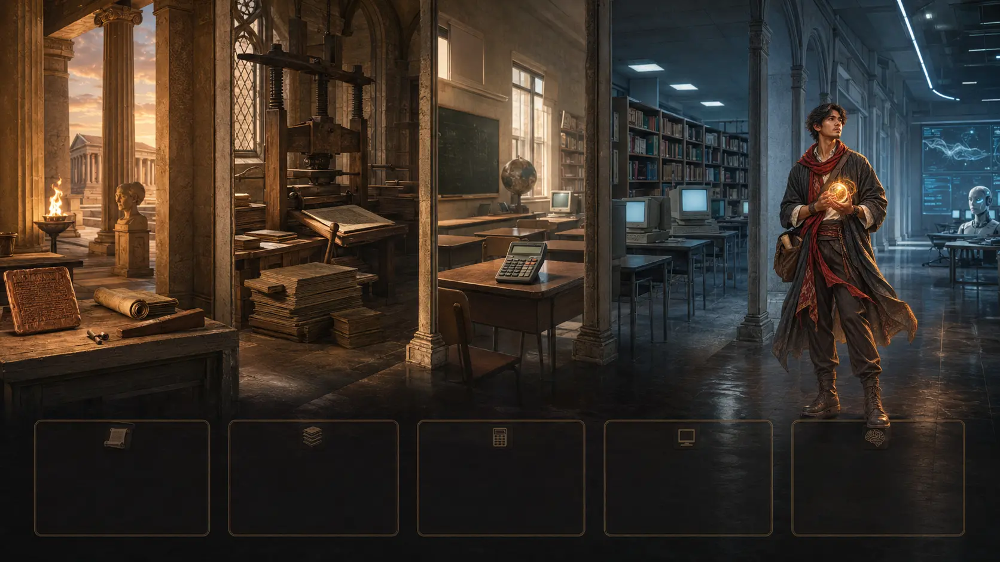

Yang naik adalah skor rata-rata kelompok.Bukan berarti setiap orang pada generasi baru selalu lebih cerdas.
Berdasarkan editorial Richard Balon · 2026
Apakah AI membuat kita
malas berpikir?
Presentasi ini membahas Efek Flynn, pembalikannya, dan dugaan bahwa kemudahan digital dapat membuat kita semakin jarang berlatih berpikir.
Artikel utama: Reversal of the Flynn Effect and Cognitive LazinessGilang Swandaru · 2026
01 — Dasar pembahasan
Apa itu Efek Flynn?
Efek Flynn adalah kenaikan rata-rata skor tes IQ dari satu generasi ke generasi berikutnya. Kenaikan ini ditemukan di banyak negara sepanjang abad ke-20.
Besarnya berbeda.Hasilnya bergantung pada negara, masa, usia peserta, dan jenis tes.
Lingkungan turut berperan.Pendidikan, kesehatan, gizi, dan kebiasaan menghadapi tes sering diajukan sebagai penjelasan.
02 — Contoh data pembalikan
Skor tes meningkat,
kemudian menurun.
Studi terhadap 736.808 pria Norwegia menunjukkan kenaikan sampai kelompok kelahiran 1975, lalu penurunan pada kelompok berikutnya.
Kesimpulan yang aman: skor tes berubah dan faktor lingkungan kemungkinan berperan. Grafik ini tidak membuktikan bahwa internet, telepon pintar, atau kecerdasan buatan menjadi penyebabnya.

03 — Pola yang berulang
Kekhawatiran terhadap teknologi
sudah muncul sejak lama.
Socrates khawatir tulisan membuat orang kurang melatih ingatan.
Buku semakin banyak. Sejumlah sarjana mengeluhkan informasi yang berlebihan.
Sekolah khawatir siswa akan kehilangan kemampuan berhitung dasar.
Mesin pencari mengubah cara orang menyimpan dan mengingat informasi.
AI dapat menyusun jawaban, bukan sekadar menemukan informasi.
Perbedaannya saat ini: AI dapat mengambil alih sebagian proses menyusun jawaban. Karena itu, cara kita menggunakannya menjadi penting.
04 — Menggunakan AI
Jawaban AI tetap
harus diperiksa.
AI dapat membantu menjelaskan topik yang sulit. Namun, kita tetap perlu memeriksa sumber, alasan, dan kesimpulannya.
Menyalin jawaban≠memahami isi
Asisten AIaktif
Pilih topik untuk mengulang dialog↗
05 — Kebiasaan mengonsumsi konten
Apa yang dimaksud
dengan brainrot?
Brainrot adalah istilah populer untuk dugaan penurunan kondisi mental atau intelektual akibat terlalu banyak mengonsumsi konten daring yang remeh atau tidak menantang.
01terus-menerus menggulir layar02sulit membaca teks panjang03perhatian cepat berpindah04lelah tanpa memperoleh pemahaman
Istilah ini bukan diagnosis medis. Balon menggunakannya untuk membahas kemungkinan dampak kebiasaan digital dan kurangnya latihan berpikir.
06 — Pokok bahasan editorial
Apa yang dimaksud dengan
kemalasan kognitif?
Balon menjelaskan kemalasan kognitif sebagai kebiasaan jarang menggunakan dan enggan menggunakan kemampuan berpikir sendiri.
Tidak mencoba mengingat.Jawaban langsung dicari melalui perangkat.
Tidak memeriksa jawaban.Hasil dari AI diterima tanpa menilai sumber dan alasannya.
Menghindari bacaan yang sulit.Teks panjang ditinggalkan sebelum dipahami.
Batas kesimpulan: Balon menduga kebiasaan tersebut dapat melemahkan latihan kognitif. Namun, belum ada bukti bahwa AI menjadi penyebab langsung pembalikan Efek Flynn.
07 — Langkah yang dapat dilakukan
Gunakan AI tanpa
berhenti berpikir.
01Pikirkan lebih dahuluCoba jawab dengan kemampuan sendiri sebelum membuka AI.
02Minta petunjukGunakan AI untuk memberi arah, bukan langsung menyelesaikan seluruh tugas.
03Periksa hasilnyaBandingkan jawaban dengan sumber yang dapat dipercaya.
04Jelaskan kembaliSampaikan hasil dengan kata-kata sendiri untuk memastikan pemahaman.
Langkah ini bertujuan mempertahankan latihan mengingat, menilai, dan menyusun alasan.
Kesimpulan
AI sebaiknya membantu kita berpikir,
bukan menggantikan prosesnya.
Gunakan teknologi untuk mempercepat pekerjaan. Tetap gunakan ingatan, penilaian, dan penalaran kita sendiri.
01Pikirkan.02Periksa.03Jelaskan.
Gilang Swandaru · 2026